|
The 17th century is the century of Mathieu Choret and his
children.
To understand them better, to "put a little flesh on the bones", it is
worth surveying the century they lived in, and whose influences they
felt.
And don't imagine for a moment that, because Mathieu emigrated to
such a distant and still so undeveloped colony, he had no
access to the modern world that was dawning. Ideas, inventions,
fashion and culture travelled fast: for example, a play by Molière was staged at the Jesuit
College the year after its premiere
in Paris.
Following the Renaissance, the 17th century marks the beginning of the modern
world. Great
men fought and worked hard to impose their
ideas; their discoveries and their works still
endure. Here are a few of them...
THE
PHILOSOPHERS THE
WRITERS THE
PAINTERS
THE MUSICIANS
THE SCIENCES
THE ARCHITECTS
But first, let's take a quick
look at the historical news.
FRANCE
In France, the 17th century
opens under the reign of Henri IV, a Huguenot
who had converted to Catholicism in order to become
king of France (reference: Patrice
Chéreau's film "La Reine Margot").
On April 13, 1598, Henri IV issued
an edict unique in Europe, the Edict of Nantes,
granting Protestants freedom of conscience.
The Edict of Nantes ended nearly 40 years of civil
war marked by many massacres between the Catholic party
(the League) and the Protestant party (the Protestant Union).
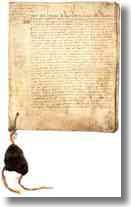 An act
of pacification, the Edict of Nantes aimed to let two
faiths, Catholic and Protestant, coexist with the same rights within
a Catholic state and to end the battles, sieges
and massacres that had followed one another from 1562 to 1598 and that were
weakening the kingdom. It was very badly received, judging
by the reluctance of the parlements, which were slow to
register it, and of the Pope, who kept demanding the repeal
of this edict that broke the kingdom's religious unity and expressing his
wish to see heresy fought. The edict could not prevent new persecutions
of the Huguenots, such as the siege of La Rochelle in 1628, but it
brought a certain social peace.
Four centuries later, the Edict of
Nantes remains a pioneering milestone in the long history of winning
public and individual liberties, the slow
recognition in France of freedom of conscience.
Louis XIII,
son of Henri IV, succeeded him
from 1610 to 1643. He governed France with the help of Cardinal
Richelieu as chief minister.
 Then
came the accession of Louis XIV.
Since he was a minor, his mother, Anne of Austria,
and
Cardinal Mazarin ruled for him. During this period came
"the Fronde", a revolt of the nobles, then of the people
(reference: Roger Planchon's film
"Louis, enfant roi").
Thanks to the skill of the minister Mazarin, the conflict ended to
the monarchy's advantage. Then
came the accession of Louis XIV.
Since he was a minor, his mother, Anne of Austria,
and
Cardinal Mazarin ruled for him. During this period came
"the Fronde", a revolt of the nobles, then of the people
(reference: Roger Planchon's film
"Louis, enfant roi").
Thanks to the skill of the minister Mazarin, the conflict ended to
the monarchy's advantage.
From 1661 (reference: Gérard Corbiau's film
"Le roi danse"),
Louis XIV began a long reign marked by several
notable events, including the revocation of
the Edict of
Nantes. The Edict of
Fontainebleau, issued by the king in October 1685, marked the establishment in
France of a rigorous Catholicism. It forced the
Huguenots to convert. Louis XIV wanted to appear in Europe as the champion of Catholicism, to defy the Pope and
the Emperor Leopold, who prided himself on having driven back the Turks besieging
Vienna.
The revocation of the Edict of Nantes is considered
Louis XIV's gravest mistake. It began a difficult end to his reign
and had serious consequences for France (the exile of 300,000 Huguenots,
often well-off and educated bourgeois, and the dechristianization of the following
century).
ENGLAND
The 17th century in England was
tumultuous. In 1603 James VI Stuart of Scotland became James I
of England. Early in his reign, on November 5, 1605, the «Gunpowder
Plot» was
uncovered in London.
Former Catholic officers, in contact with the Spanish
authorities and perhaps the Jesuits, planned to blow up
the Parliament at Westminster on the very day of its opening session, in the presence
of the king and his ministers. But one of the plotters was arrested
just as he was about to set fire to 36 barrels of gunpowder.
The plotters blamed the Anglican king James I Stuart for his intolerance
toward them, as toward the Puritans. They were forced to
flee or were executed as soon as their plot was discovered .
In memory of it, English children still
set off firecrackers on November 5.
 In 1625 began the reign of Charles
I, but
he would be beheaded in 1649 after religious troubles led to
a revolution, whose leader was Cromwell (opposite).
Cromwell then ran a
Protectorate, read a dictatorship, until his death in 1658. In 1625 began the reign of Charles
I, but
he would be beheaded in 1649 after religious troubles led to
a revolution, whose leader was Cromwell (opposite).
Cromwell then ran a
Protectorate, read a dictatorship, until his death in 1658.
Monk restored the monarchy and
the Stuarts. But from 1688 to 1689 England went through a second
revolution. William III then reigned.
So both countries
went through wars of religion and revolution, but
they would evolve in opposite directions: England toward a
parliamentary monarchy, France toward an absolute monarchy.
EUROPE
Many wars
devastated Europe in the 17th century: wars of religion
between Catholics and Reformers, wars of succession, wars
over territory. The Turks even besieged Vienna.
The Thirty Years' War, from 1618 to 1648, which ended with the Treaty of
Westphalia. The Franco-Spanish War, from 1642 to 1659, which ended with
the Treaty of the Pyrenees.
The War of Devolution, in 1667 and 1668, which ended with the Treaty
of Aix-la-Chapelle.
The Dutch War, from 1672 to 1678, which ended with the Peace of
Nijmegen.
In 1688-1697, the War of the League of Augsburg, which ended with the Peace
of Ryswick.
In each of these treaties,
territories were redistributed among the countries involved, often even in
their distant colonies,
royal successions were recognized, and compensation was set...
In France, two great generals dominated military history, Condé and
Turenne.
EASTERN
EUROPE, ASIA, AMERICA, AFRICA
In Russia anarchy reigned
until the Romanovs came to power in 1613. Peter the Great began
his reign in 1682.
Queen Christina reigned in
Sweden from 1632 to 1654. Ladislas II was king of Poland at
the same time. In 1683 the Turks besieged Vienna. In 1699
the Peace of Carlowitz was signed, and the Turks lost Hungary.
In Japan, Jeyayasu Tokugawa
became Shogun in 1603. In 1651, the Shoguns became the masters
of Japan.
In China, the
Manchus were in Mukden in 1625. In 1644 came the fall of the
Ming, and
the Manchu dynasty began.
In India, Aurangzeb, a
Mughal, pushed his father and brothers out of power by
murdering them in
1659, and proclaimed himself emperor.
In America, Africa and
Asia, Europeans continued their exploration and colonization. In 1699 the French took possession of
Louisiana.

BACK TO THE TOP OF THE PAGE
THE AGE OF
REASON
A new era began:
several thinkers, often both mathematicians and philosophers,
set themselves the task of considering human reason not in its
divine origin but in its active workings.
They lived in a troubled period of wars of religion; several
would suffer from it, and some would conclude in favour of tolerance.
DESCARTES,
René (1596-1650)
|

|
-
- "And I always had an extreme desire to learn to
distinguish the true from the false
- so as to see clearly in my actions and walk with confidence
in this life."
Descartes, Discourse on the Method
|
The inventor of analytic
geometry (the marriage of geometry and algebra), Descartes is
not only a mathematician and the philosopher of reason; he also
embodies the philosophical adventure open to anyone
dissatisfied with received opinions. His method
allowed him to break free once and for all from the confusions of scholasticism by
defining a logic of clear and precise ideas, based on deduction
moving from the simple to the complex. His "Discourse on the
Method" and his "Metaphysical Meditations" are the foundation
of modern philosophy and science.
BACON,
FRANCIS (1561-1626)
An English philosopher, he was
one of the creators of the experimental method. He freed
scientific research from the principle of authority and from the
deductive method. He drew up a methodical
classification of the sciences.
HOBBES,
THOMAS (1588-1679)
An English philosopher, he was
the author of Leviathan. Written
in 1651, this work opened the way to modern political philosophy and
fed political thought until the French Revolution.
 Unlike his many predecessors, Hobbes no longer raised the
question of choosing the best regime; instead he helped found
politics on the " effective truth of things ", in
the manner of Machiavelli, and examined legitimate obedience and therefore
sovereignty.
Unlike his many predecessors, Hobbes no longer raised the
question of choosing the best regime; instead he helped found
politics on the " effective truth of things ", in
the manner of Machiavelli, and examined legitimate obedience and therefore
sovereignty.
The state of nature Hobbes describes is a ruthless and
unbearable way of life. To preserve their lives and move
toward peace, people give up this state of war of their own accord and choose
a higher authority : the sovereign. The sovereign inherits everything
that belonged to individuals in the state of nature and becomes its sole
holder. The Leviathan, the anthropomorphic figure used by the philosopher,
holds absolute and unlimited power in exchange for the civil peace
it brings individuals.
A supporter of absolutism, Hobbes makes the sovereign a reasonable being
guided in his actions by utilitarian considerations, whose duty
is to succeed. For some, because of his liberal interpretation
of law, Hobbes may even be one of the founders of liberalism.
Through his rationalist description of the social contract and of sovereign
power, it is the scientific dimension of politics that is brought to
the fore.
LOCKE, JOHN
(1632-1704)
An English philosopher, he rejected innate ideas and placed the source of our knowledge
in experience, that is, sensation aided by
reflection. He also wrote a Treatise on Education and
Letters Concerning Toleration.
SPINOZA,
BARUCH (1632-1677)
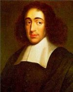 Spinoza is best known
as the author of a system (and the word often has a pejorative connotation).
In the 18th century, the label Spinozist would be wrongly applied to
materialists, because he criticized traditional theology and
the idea of a creator God. Spinozist philosophy is therefore on the fringe.
A supporter of democracy, he lived in poverty and was persecuted.
Spinoza's great theoretical thesis
is that there is only one substance, infinite and unique, God,
which is therefore one with the world, the universe itself. " Deus
sive Natura " (God, that is, Nature). This substance has
an infinity of attributes (that is, aspects or characters of the
substance), themselves infinite, but we know only two of them, the
only ones accessible to our thought: Thought and Extension. Thought
is an attribute, and our soul, like each particular idea, is
a " mode " of that thought (that is, they
are part of the more general attribute that is Thought). Every material
object (this table, this notebook, my body...) is a mode of
the attribute Extension (extension means "that which occupies
space"). Modes are finite.
This thesis is both pantheist and atheist. Pantheist, because it
identifies God with the world. Atheist, because it denies the existence of a
moral, creating, transcendent God.
MALEBRANCHE,
NICOLAS DE 1638-1715)
His idealist metaphysics,
derived from Cartesianism, solves the problem of communication between
soul and body through vision in God. Malebranche was an
Oratorian (a member of a religious order); his philosophy professes optimism and bases
morality on the idea of order.
LEIBNIZ,
WHILHELM (1646-1716)
A German philosopher and
mathematician. With Bossuet he studied the possibility of merging
the Catholic and Reformed Churches; he discovered, at the same time as
Newton, the foundations of mathematical analysis, and built a
multiplying machine. His philosophy is idealist.
BAYLE,
PIERRE (1647-1706)
|
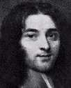
An apostle of
tolerance
and free inquiry
|
-
A French philosopher, Bayle,
author of a Historical and Critical Dictionary, foreshadowed the
philosophical thought of the 18th-century "Enlightenment".
Born a Protestant, Bayle converted to Catholicism under compulsion, then returned to the so-called
Reformed religion. He then became an accomplished sceptic,
shunning any certain
truth and its train
of exclusions
and intolerance.
|
Excerpt from the Philosophical Commentary (1686)
A timeless text in which humanity speaks, not in the sense of compassion,
but in the sense of rational thought, in the sense that humanity is what
carries the light of reason, without which it no longer deserves its
name:
«It is impossible, in the state we are in, to know
for certain that the truth that appears to us (I speak of the particular
truths of Religion, and not of the properties of numbers or
the first principles of metaphysics, or the demonstrations of geometry)
is the absolute truth; for all we can do is be
fully convinced that we hold the absolute truth, that we are not
mistaken, that it is the others who are mistaken, all of them
ambiguous marks of truth, since they are found among pagans
and the most lost heretics. A Papist is as
satisfied with his religion, a Turk with his, a Jew with his, as
we are with ours (Bayle was Protestant; Papists, a pejorative term,
are Catholics). The falsest religions have their
martyrs, their incredible austerities, a zeal for making converts
that very often surpasses the charity of the orthodox, and an extreme
attachment to their superstitious ceremonies. In the condition
man is in, God is content to require that he seek the truth
as carefully as he can and that, believing he has found it, he
love it and order his life by it. The main thing after that is to act
virtuously; and so everyone must use all his strength to honour
God by prompt obedience to morality. In this respect, that is,
with respect to knowing our moral duties, the revealed
light is so clear that few people are mistaken about it when in good faith
they seek what it is.»

THE
BAROQUE AND CLASSICISM
The 17th century began with the vogue for the Baroque,
inherited from the previous century and reflecting Italian
and Spanish influences, which had also reached
England. The convoluted and
pedantic "préciosité" and even the "burlesque" are seen as
distortions of the Baroque.
In France, the reaction to this movement was to
promote discipline, order and regularity.
Theorists drew up rules. The Académie française, founded
by Richelieu, symbolizes this effort to give the literary art the
highest dignity and official recognition.
One feature of classicism is that it is a
social literature. Its highest forms, the theatre
and pulpit oratory, are those that require an audience gathered
for a ceremony, whether secular or sacred. The strict
social hierarchy of the time and the highly organized etiquette of the court
are matched in literature by fine classical order.
So classicism might be defined as a
harmony between the author and his milieu, a harmony between the grandeur of art and the
grandeur of the absolute monarch's reign. Fortunately the monarch had good
taste. His pride made him love everything grand and
majestic, but he could appreciate the frank comedy of Molière, who could
allow himself certain liberties thanks to the king's protection.
Louis XIV also established the fame of Racine, Boileau and
Bossuet. Authoritarian as he was, he did not impose a line on
literature or turn it into propaganda. He sensed that genius
is incompatible with servility, and even tolerated a certain rebellious
independence. If he had little love for La Fontaine, which is
understandable, his revenge was limited to delaying his admission to
the Académie française. The triumph of classicism is tied to the
long reign of Louis XIV, a sovereign in love with glory who understood that
posterity would admire him for having been the clear-sighted and generous protector
of letters and the arts.
The end of the century saw new trends
showing that the classical balance was under threat. Thus
La Bruyère and Fénelon, without breaking away completely, heralded tastes
that would come into their own in 18th-century literature: wit and
artfully careless grace.
The general need to codify
and standardize
The 16th century and the précieux had
sought to enrich their vocabulary. At the end of the 17th century,
the aim now was to establish the official list of words.
The first dictionary appeared in 1694, with a
grammar summary. The French language was thus standardized.
In
literature, care was taken to distinguish the genres: farce, comedy,
drama, tragedy, novel and short story.
The cult of the Ancients
Throughout the Middle Ages, and above all in the Renaissance, people
never stopped admiring the genius of the Ancients. The classical writers
in turn imitated them, believing that the great authors of
antiquity had reached perfection, as proven, in their view, by the lasting
fame they enjoyed. So Molière imitated Plautus, Racine Seneca
or Euripides, La Fontaine the Greek fabulist Aesop, and Boileau, in his Art
Poétique, Aristotle's Poetics...
There was the "Quarrel of the Ancients and the
Moderns", a controversy started by Perrault, who
defended the Modern authors, and Boileau, who defended the Ancients.
Each side developed its arguments and had its defenders. Every
writer took one side or the other, and the controversy lasted more
than 50 years. Its consequences were considerable.
Questioning the models of the past shook the notions of tradition
and authority. Classical taste could no longer impose its aesthetic
drawn from Antiquity, and the critical spirit that came out of
the clash would win out. The Quarrel of the Ancients and the
Moderns thus heralded the Enlightenment philosophy of the following century.
|

CERVANTES,
MIGUEL DE
(1547-1616)
Spanish writer,
author of the immortal Don Quixote de la Mancha.
|
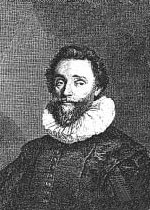
MALHERBE,
FRANÇOIS DE
(1555-1628)
A lyric poet,
protected by Henri IV and Louis XIII. His theories were even more
influential than his work. A champion of poetry
with clear and simple expression, he opposed learned
poetry and opened the door to classicism.
|
|
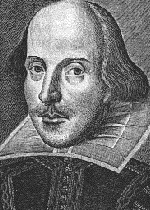
SHAKESPEARE,
WILLIAM
(1564-1616)
English playwright;
his immense body of work is extraordinary for its richness and
diversity. He drew on history, legend or
his own imagination. Its dramatic movement has an
inimitable power, and every tone mingles in it, from the burlesque to
the sublime. His sonnets are poetic masterpieces,
and his plays have transcended time.
|

CORNEILLE,
PIERRE
(1606-1684)
Dramatic poet. He
was the true creator in France of classical art in the
theatre. He replaced the drama of intrigue with an inner
drama. His heroes, human but valiant, are
passionately drawn to the loftiest feelings, as in Le Cid,
for example. To express this heroism, which often rises
to the sublime, Corneille used simple, bold language, and his lines are
often struck like maxims.
|
|

LA
FONTAINE, JEAN DE
(1621-1695)
A poet, he
won fame and the protection of patrons by
publishing his Contes in verse. He then published
his Fables. Without ever inventing the subject of his
fables, which he borrowed from the Ancients, he gave these little
stories intense life and a delightful turn. The moral
is not dogmatic; it is enriched by his personal
reflections and his experience of life.
|
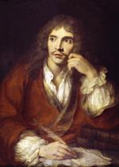
MOLIÈRE,
J.B. POQUELIN
(1622-1673)
Comic
author. Protected by Louis XIV, he wrote
many comedies to entertain the Court. A seasoned
actor, he used the whole range of comic effects.
His masterpieces are the plays in which, attacking a
vice or a foible, he created characters who have become
archetypes. As for the moral that emerges from
his theatre, it urges people never to
go too far and to stay within the limits that
common sense sets for human nature.
|
|

MME
DE SÉVIGNY
(1626-1696)
Author
of letters to various correspondents, including her
daughter. Published in 1726, these letters are prized for the
spontaneity of their style and the freshness of their imagination, and
contain interesting details about the customs of the time.
|

BOSSUET
(1627-1704)
Prelate, writer and
orator. Famous for his sermons and funeral orations, he
was chosen by Louis XIV as tutor to the Dauphin. He
supported the king's religious policy against the Protestants.
|
|

PERRAULT,
CHARLES
(1628-1703)
He started the
"Quarrel of the Ancients and the Moderns" by taking
the side of the Moderns. But his fame comes
from his Tales of Mother Goose. Drawn from
French folklore and given literary form by Perrault, these tales
belong to an
oral, ever-changing literature meant for village folk and made to be read in the evening, at
the veillée. Perrault rescued from oblivion eight traditional stories that have become
universal, such as Sleeping Beauty, Little Red
Riding Hood, Bluebeard, Cinderella
etc., stories handed down from generation to generation
and told to children for centuries.
|

MME
DE LA FAYETTE
(1634-1693)
Author of La
Princesse de Clèves, a psychological novel of great
restraint of expression, of short stories, and of Memoirs of the
Court of France.
|
|
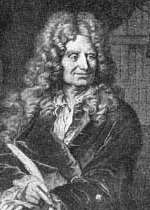
BOILEAU,
NICOLAS
(1636-1711)
An imitator of the Latin poet
Horace, he devoted himself to moral and
satirical poetry. He excelled above all at literary
criticism. In the name of good
sense and nature, his biting wit attacked bombast, pedantic
erudition and tasteless préciosité. He
helped establish the literary ideal that would be
given the name classicism. A devoted friend of Molière
and Racine. |
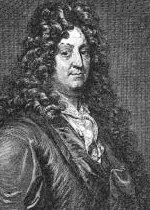
RACINE,
JEAN
(1639-1699)
A tragic poet, he
achieved the ideal of classical tragedy
to perfection. Unlike Corneille, who sought out
complicated situations in the midst of which his heroes
display superhuman qualities, Racine wanted a
simple, clear action whose twists arise from the very passion
of the characters.
|
|
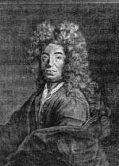
LA
BRUYÈRE, JEAN DE
(1645-1696)
Writer and
moralist. His portraits depict the manners of his time in a lively and
often cruel way.
|

FÉNELON
(1651-1715)
Prelate and
writer. Some writings full of indirect
criticism of Louis XIV's policies brought him
disgrace, and others, favourable to the Quietist doctrine,
brought him the Church's condemnation. Fénelon
submitted and withdrew to the provinces. A liberal mind and a
sensitive soul, Fénelon already offers a glimpse of a new spirit
heralding the 18th century, which would be called the Age of
Enlightenment. |

THE
BAROQUE AND CLASSICISM
Following the Protestant
Reformation, the Catholic Church undertook a Counter-Reformation.
It no longer took up arms. Instead, it invested more than
ever in art, seeing in it a way to shine through "beauty", in
the service of the papal image. Rome
became the capital of painting, and artists from all over
the world came to work there. Art moved a little further away from religious
icons.
Flemish Baroque set itself apart
by giving priority to the strength of contrasting colours and to lively
scenes. Rubens
dominated the Baroque period in Europe, along with Poussin (in France), and he was
the first to sell monumental canvases at astronomical prices.
The "classicist" variant of the Baroque took place mainly in
France, with Nicolas Poussin and Le Lorrain.
It is a calmer, more balanced painting, with preliminary studies.
Light also became important, but softer than in Holland.
The pictorial genre of still
lifes enjoyed a golden age in the 17th century, while
genre painting became more and more important in décor.
These compositions of inert objects, skilfully arranged on
ledges, are, so to speak, brought to life by fruit and flowers.
In the 17th century, still lifes benefited from all the developments
that appeared at the time in the history of painting, notably
chiaroscuro, launched by Caravaggio
(1573-1610), which highlights subjects through the use of shadow and
light.
At that time, Holland
became the richest country in the world, because it was the greatest trader. After
Spain granted independence to the north of Holland, the country
became Protestant, rejected Catholic and classical icons, and
took an interest in everyday Dutch life; it gave outdoor and indoor light
its full standing.
Vermeer was in love with
painting. He composed his pictures meticulously, with preliminary sketches,
and painted no more than two pictures a year. At times he was an art dealer
to survive. He nevertheless died in poverty.
Rembrandt is the master of chiaroscuro.
He stages the shadows. The eyes of his figures have a
power rare for the period, and every painter since has seen his pictures as very
modern.
|
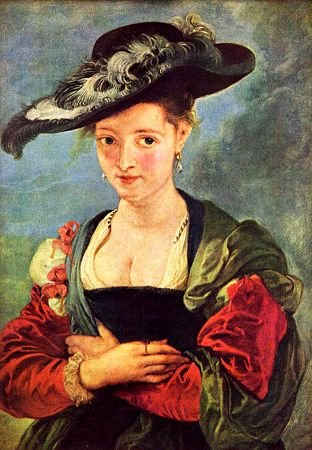 |
RUBENS
(1577-1640)
Flemish artist and diplomat.
Rubens worked for Marie de Médicis (Luxembourg Gallery) and the
kings of Spain and England. Head of a very
productive workshop in Antwerp, he stamped his strong personality on all
Flemish painting of his century. Through the breadth of his
drawing, the freedom of his technique and the warmth of his
colours, he is one of the greatest decorative painters. |
|
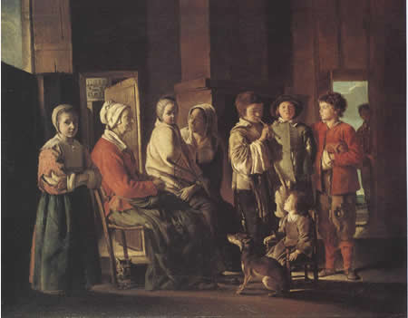
LE
NAIN
There were three brothers: Antoine
(1588-1648), who painted genre pictures; Louis
(1593-1648), the most famous, who painted peasant scenes; and the
third, Mathieu
(1607-1677), who painted mythological scenes and genre
pictures. Sometimes all three worked on the same
picture. |
|

|
LA
TOUR, GEORGES
de la (1593-1652)
French painter of
reality. He left religious and genre
works. |
|
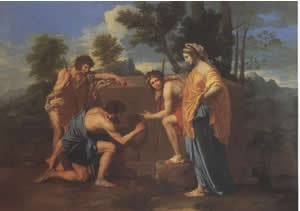 |
POUSSIN,
NICOLAS (1594-1665)
French painter. He spent
most of his life in Rome. He moved toward an
increasingly austere classicism. His last
works show a broad and powerful lyricism. |
 |
VELÁZQUEZ,
DIEGO (1599-1660)
Spanish painter. A bold
portraitist, he is the most original painter the Spanish school
has produced and one of the greatest colourists of all time.
He made several trips to Italy. Most of his canvases
are gathered in the Prado. |
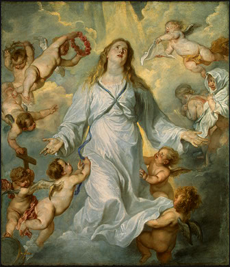 |
VAN
DYCK, ANTHONY (1599-1641)
Flemish painter.
A collaborator of Rubens, then court painter to Charles I
of England; his portraits are all masterpieces. |
|

|
LE
LORRAIN, CLAUDE (1600-1682)
French landscape painter.
He spent much of his life in Rome, where he became
friends with Poussin. He is the painter of sun and
light, and one of the French masters of landscape. |
|

|
REMBRANT
(1606-1669)
Dutch painter and engraver whose work
numbers nearly 700 pieces. His power, the dazzling
richness of his brush, his mastery of chiaroscuro, the life
in his flesh tones and the fine harmony of the whole place him
among the greatest geniuses of painting. |
|

LE
BRUN, CHARLES (1619-1690)
French painter. Protected
by Colbert and Louis XIV, he had a considerable influence on the
arts of his time. He became the king's first
painter in 1662. The king then appointed him director of the Gobelins
Manufactory and director of the Academy. He oversaw the
decoration of Versailles. The "Battles
of Alexander" series, in the Louvre, makes up the main part of his
work as a painter. |
|
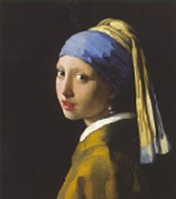 |
VERMEER,
JAN (1632-1675)
Dutch painter of landscapes and
interiors. Long overlooked, he is
now considered one of the greatest painters of the 17th
century. His small body of work includes interior
scenes, landscapes and a few portraits that show
his taste for the play of light and subtle harmonies
of colour. |
BACK TO THE TOP OF THE PAGE
BAROQUE
MUSIC
Here
are some important musicians of the 17th century, but there were also
Pachelbel, Blow, Sweelinck, Rossi, Cavalli, Frescobaldi, Charpentier, de
La Lande, Buxtehude, Couperin, ...
|

|
MONTEVERDI,
CLAUDIO (1567-1643)
Italian, the son of a doctor,
Monteverdi composed his first songs at 15. He then became violinist and singer to the Duke of
Gonzaga, in Mantua, for 22 years. At the height of his success, he
became maestro di cappella of St Mark's Basilica in Venice.
When his
wife died, he took holy orders. "Orfeo", in 1607,
was the first opera in history. He went on composing
oratorios until his death, when he was given a funeral worthy of a
king. |
|

|
LULLY,
JEAN-BAPTISTE (1632-1687)
An Italian, he was taken on at the court
of the Duke of Guise at 14, then, as dancer and violinist, at
the court of Louis XIV. In 1653 he became court
composer. He worked with Molière on "Le Bourgeois
gentilhomme". In 1672 he set up the Académie royale de
musique and composed operas of a new kind, the tragédies
lyriques, including "Athys" and "Phaéton". He
died in 1687, crowned with success, and Louis XIV gave him a
state funeral. |
|
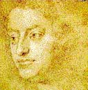 |
PURCELL,
HENRY (1659-1695)
English, the son of musicians, at first a
singer, he joined the king's violinists at 18.
Then he became chief organist of Westminster
Abbey at 20 (his first job had been maintaining
that organ). An organ builder and copyist, he published his
first sonatas in 1683, which brought him immediate
success. He took an interest in vocal music and
composed operas with the poet Priest. |
|

|
VIVALDI,
ANTONIO (1678-1741)
An Italian, born in Venice to a violinist father, he learned
that
instrument very early. In fragile health, he took holy orders.
The
"Red Priest" joined the Ospedale della Pietà orphanage as violin teacher in 1703. Then he became maestro di cappella
there and stayed 40 years. He composed a great deal, including the opera "Orlando
Furioso", made tours that brought him fame across Europe,
and died in Vienna in 1741, in a life stripped of all luxury. |
BACK TO THE TOP OF THE PAGE
THE
LAWS OF NATURE,
A RIFT BETWEEN SCIENCE AND RELIGION
As you might expect, this rift did not open without difficulty,
since the religious authorities held firmly to their positions.
Philosophers, mathematicians, astronomers and
physicists gradually discovered the laws of nature, but these laws did not
agree with Scholasticism, that is, with Holy
Scripture. These
researchers, wanting to know the world through experiment rather than
through the doctrines of faith, exposed themselves to the fury of
the Inquisition. That name refers to the tribunals set up throughout
Christendom, from the Council of Verona in 1183 in the Middle Ages
into modern times, to seek out and punish
heretics, that is, all those professing a doctrine
contrary to the Catholic faith. In France the Inquisition was
abolished in 1808 by Napoleon, but restored from 1814 to
1834.
Not only did the discoveries of these researchers and
philosophers offend the "religious establishment" in power, but
all of it also took place
against a background of wars of religion between Catholics and Reformers
(Protestants) in several countries. Times were hard for
everyone; many lived in exile and persecution, and several, like Newton,
kept their discoveries quiet for a long time so as not to "go looking for
trouble". BRAHE,
TYCHO (1546-1601) A Danish
astronomer, Tycho Brahe discovered a system (a theory) that bears his name. His
observations allowed Kepler to state his laws of planetary motion. NAPIER,
JOHN (1550-1617) A Scottish
mathematician, he invented logarithms in 1614.
The aim was to simplify the trigonometric calculations of
astronomy. With the invention of his "rods",
which could perform the four basic operations, he was
behind the first calculating machines, whose workings he
explained in a treatise (Rabdologiae, 1617), introducing, in
notation, today's decimal notation for decimal numbers
instead of fractional notation: 32.578 rather than
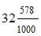
GALILEO,
GALILEO GALILEI (1564-1642)
|

|
"Eppur, si
muove!" (And
yet it moves)
Italian words attributed to
Galileo, forced to recant for having proclaimed, after
Copernicus, that the earth turns on its axis, contrary to the
letter of Holy Scripture. |
Italian mathematician, physicist and
astronomer. Galileo is one of the founders of the experimental
method. He discovered the law of the isochronism of the small
swings of the pendulum and the laws of falling bodies, and stated the principle
of inertia and that of the composition of motions. He conceived the
thermometer and in 1609, in Venice, built the first astronomical
telescope, discovering the librations of the moon (the apparent
rocking of the moon about its axis).
In Galileo's time, the Church made Ptolemy's geocentric
theory a kind of article of faith. In doing so, the Church
confused science and religion. Since the astronomical theory inherited
from Antiquity made the earth the centre of the universe, the clergy had
adopted it because it seemed to fit their beliefs: Man, the privileged
creature, thus lived at the centre of the world…
It was in this context that Galileo learned of the heliocentric theory
of Copernicus. Galileo was not put off by the fact that this theory might
seem contrary to the dogma of his day. In this he was one of the
first modern scientists, recognizing no criterion of truth
other than demonstration (and not Bible quotations). He
wrote: "Mathematical certainty is equal to divine certainty".
| The Academy of the Lynxes was founded on December 25,
1611, to defend Galileo's philosophy. It was a learned society that forbade mixing
politics or religion with science |
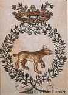 |
But the Court of Rome denounced Galileo as a heretic and ordered him to stop
teaching his theory; he gave in to save his life. But, back in Florence, in 1632 he published all the proofs of the truth
of Copernicus's theory. The pressure of "the establishment" was
then merciless, and Galileo was arrested, even though he believed he had
convinced several important figures of his day, and Pope
Urban VIII was one of his friends. He underwent a trial
before the Inquisition; his sentence was that he must recant three times,
on his knees, the
theory he championed and taught. His work and that of Copernicus
would be placed on the Index. Galileo ended his life under house
arrest at the Villa Medici.
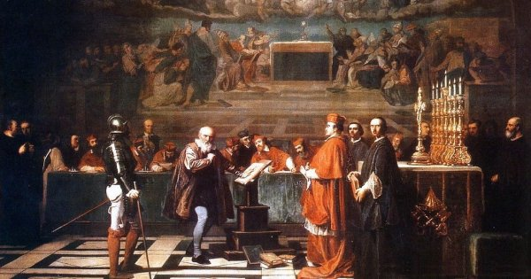
Galileo's trial,
in 1632, marked the separation between the old and the new in
science. It was the break between science and religion that would lead
to the prodigious development of science.
Galileo was a researcher who did not cut himself
off, but kept in touch with the merchants and craftsmen of his day;
what is more, he wanted to spread his discoveries to contribute to the progress and
well-being of his contemporaries, at the risk of losing his freedom.
He did not discover heliocentrism, but he perfected the telescope.
He broke new ground by using a technical instrument to contradict or support
a scientific theory.
He stands as the founder of modern science:
science is no longer purely speculative, but seeks to be consistent
with the technology that makes experiments possible, rather than only
applying principles.
KEPLER,
JOHANNES (1571-1630)
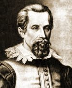 |
A German astronomer and physicist, his unhappy
and persecuted life did not stop him producing
works of genius.
He is famous for formulating
and verifying the three laws of planetary motion. These
laws are now known as Kepler's laws. |
During his university studies,
Kepler immediately accepted Copernicus's theory, believing that the
simplicity of the Copernican planetary order must have been God's
plan. In 1594 Kepler worked out a complex geometric
hypothesis to explain the distances between the planetary orbits.
He then proposed that the Sun exerts a force that decreases with distance
and holds the planets in their orbits. He published his
explanation in a treatise called Mysterium Cosmographicum
in 1596. This work is important because it presents the first
complete and valid explanation of the geometric advantages of Copernicus's
theory.
He became assistant to the Danish
astronomer Tycho Brahe at his observatory near
Prague. When Brahe died in 1601, Kepler succeeded him as
imperial mathematician and astronomer at the court of Rudolf II, Holy
Roman Emperor. He published Astronomia Nova in 1609, the
culmination of his research to calculate the orbit of Mars. This treatise
contains the formulations of two of the laws of planetary motion, called
Kepler's laws. The first
states that the planets move in elliptical orbits with
the Sun; the second states that the imaginary line
drawn between the Sun and a planet sweeps out equal areas of an
ellipse in equal intervals of time; in other words, the closer the
planet comes to the Sun, the faster it moves.
In 1619 Kepler published his Harmonice
Mundi; the last part of this work contains Kepler's third
law: the cube of the distance between a planet and the sun divided by
the square of that planet's orbital period is a constant and is the
same for all planets.
At the same time appeared the Epitome
Stronomiae Copernicanae, which gathered all of Kepler's discoveries
in a single volume. Of incomparable importance, this book became the first
astronomy textbook based on Copernican principles. Over
the next three decades it had a major influence, converting
many astronomers to his theories.
The last major work of Kepler's
life was the Tabulae Rudolfinae, in 1625. The English mathematician and
physicist Sir Isaac Newton relied heavily on Kepler's theories and
observations to formulate his theory of
gravitational force.
HARVEY,
WILLIAM (1578-1657)
An English physician, Harvey is famous
for his discovery of the circulation of the blood in 1628.
The beginnings of modern medicine and surgery had come the
previous century with the French physician Ambroise
Paré (1536-1590). A royal physician, Paré discovered the
ligature of arteries, which he used instead of cauterization in
amputations. He published many scientific works.
GUERICKE,
OTTO VON
(1602-1686)
A German physicist, in 1650 he invented
an air pump to create a vacuum;  he
demonstrated atmospheric pressure with the famous experiment
of the Magdeburg hemispheres (he was
burgomaster of Magdeburg) in 1654. he
demonstrated atmospheric pressure with the famous experiment
of the Magdeburg hemispheres (he was
burgomaster of Magdeburg) in 1654.
Law or phenomenon: Atmospheric pressure
acts in all directions.
Description: Two hollow brass hemispheres that can
be fitted tightly against each other. One of the hemispheres
has a tap that lets it be screwed onto a vacuum pump.
The air is pumped out of the pair of hemispheres,
and it then turns out to be very hard to pull them apart. This
machine amazed people.
He also invented the first electrostatic machine.
SNELL van
Roijen, known as SNELLIUS (1581-1626)
A Dutch astronomer and surveyor, Snell
was the first to discover the laws of refraction, in 1621. The refraction of
light is a fundamental branch of astronomical observation.
Tycho Brahe was the first to take it into account in his observations.
These laws, called Descartes' laws in France, are often called the
Snell-Descartes laws.
As a surveyor, Snell made the first trigonometric calculations
to measure the arc of a meridian, in 1617. His procedure,
now called the triangulation method,
was used from then on in all geodetic surveys.
TORRICELLI,
EVANGELISTA (1608-1647)
An Italian physicist, Torricelli discovered the effects of atmospheric pressure.
In 1626 Torricelli, a young disciple of Galileo then aged 18, was not
satisfied with an answer from his master, who had been asked to clear up
the mystery of the fountains, namely: " Why can't fountain water
be pumped higher than 32 feet
?" Galileo thought that the water, too compressed at the bottom of
the column, was kept from rising higher. Torricelli thought it over,
and came up with another answer: it is the weight of the air that pushes
the water up the pipe when the pump works, and not nature's horror of
a vacuum.
He proved it by turning a 96 cm tube filled with mercury upside down
into a basin filled with the same metal. The mercury in the tube poured out into
the basin and settled at 76 cm above the level of the basin, that is, 14
times lower than water. This confirmed his hypothesis, since mercury is
14 times heavier than water.
From then on it had to be accepted that air weighs on everything.
Torricelli had discovered atmospheric
pressure, and
invented the barometer.
PASCAL,
BLAISE (1623-1662)
Mathematician, physicist, theologian,
philosopher, moralist and founder of classical prose in France: the
many talents of this extraordinary man made Blaise Pascal
one of the most important figures of his century.
Despite an early death and much
of his time being devoted to religion, he left his mark on the history of science,
especially through his great analytical rigour and his flair for experiment.
|

|
In 1642 he set out to develop a
calculating machine to help his father,
a jurist, with his tax accounting work. He was only
19. Meant for abstract and financial calculation, the "Pascaline"
added, subtracted, multiplied and divided, using a system of
six ten-toothed wheels. After three years of effort, Pascal had a
finished machine and decided to sell it; a number
of copies were made, but the cost was too high and
production was stopped. |
In 1646 Pascal converted to
Jansenism, but continued his scientific studies. Next, experiments on the
vacuum, following Torricelli's work, fully occupied
Pascal. From 1646 to 1654 he carried out many experiments of his own
with all sorts of instruments. One of them allowed him to
confirm the reality of the vacuum and of atmospheric pressure and to establish
the general theory of the equilibrium of liquids. Pascal was also
behind the invention of the hydraulic
press, based on the principle that bears his name, which states
that in an incompressible fluid at rest, pressure is
transmitted undiminished.
Thanks to his knowledge of
hydrostatics, he took part in the draining
of the Poitou marshes, at the request of the Duc de Roannez,
the very man with whom he would create the famous five-sol
coach lines for getting around Paris, foreshadowing public
transport and perfectly reflecting the scholar's concern
for practical action.
From 1650 on, Pascal took an interest
in infinitesimal calculus and, in arithmetic, in sequences of whole
numbers. Though he was not the first to work on Pascal's
triangle, since Chinese and Arab mathematicians
had done so long before him, his is the most systematic study.
And it was in his Treatise on the Arithmetical Triangle that he stated
for the first time the principle of proof by induction.
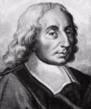 In 1654 he had a mystical
experience, a revelation that led him to a complete
conversion. He settled at the monastery of Port-Royal, the centre of
Jansenism, some thirty
kilometres from Paris, and from then on devoted himself almost
exclusively to defending Jansenism and to literary works
with a philosophical and religious flavour. Jansenism
was part of the French Catholic Reformation. It was a reaction
against the optimistic view of man and his abilities.
His last scientific work concerned cycloids. In 1658
he solved certain problems that had occupied many mathematicians,
notably concerning the area and volume generated by rotating a
cycloid about its axis.
Blaise Pascal is also, with Pierre Fermat, the founder
of probability theory.
In poor health (he had been disabled and suffering since
childhood, which did not stop him, after his conversion, from
wearing a hair shirt and mortifying his body), Pascal died at 39, in
the midst of the quarrel between the Jansenists and the Jesuits, a quarrel that
the Church would only settle in the following century, with serious
political consequences.
HUYGENS,
CHRISTIANN (1629-1695)
A Dutch physicist and astronomer,
Huygens was the first, in 1690, to put forward the hypothesis of light waves, thereby explaining
the effects of refraction and diffraction.
He defined the notions of centrifugal force and moment of inertia, and stated
the laws of the pendulum that would be used in building clocks.
he would invent the balance spring, which made it possible to build
watches.
In astronomy, he discovered (1656) the rings of Saturn and its first
moon (the largest: Titan, 5150 km in diameter) with a
telescope of his own making. It took the American Voyager probes
(1980 to 1981) to identify a multitude of rings and count
20 moons of this planet. -
NEWTON, SIR
ISAAC (1642-1727)
|

|
"The greatest genius of
all times and all countries". That is how
many describe one of the most famous British
scientists.
After a life of exhausting work that ruined his health, he achieved
fame.
Made a baronet in 1705, Newton is buried in Westminster
Abbey, alongside the kings of England. |
An English mathematician, astronomer and philosopher,
as a youth he was an inattentive pupil who preferred building
little machines and observing nature. He became a Bachelor of Arts
in 1665 at the University of Cambridge. But that same year the
plague struck the town and Newton broke off his studies for two years.
It was during this period that Newton made
most of his discoveries, and this is where tradition
places the famous story of the apple, which is probably just an
invention. Yet although he developed his main theories, notably in
optics, he would publish nothing for many years, for fear of
arguments and confrontations with his contemporaries. (Darwin
would do the same more than two hundred years later.)
After returning to Cambridge, Newton
took his other university degrees and in 1669 obtained the chair of
mathematics. Indeed, Newton had done a great deal of research
in this field. As early as 1666, starting from the drawing of tangents,
he began studying differentiable functions and their derivatives, on
the basis of Fermat's work. The following year he classified
cubics and drew them correctly with asymptotes, inflections and
cusps. In 1669 he wrote an account of the
foundations of infinitesimal calculus that would not be published until 1711.
It can be said that in 1670 Newton founded
modern analysis.
In 1671 Newton improved the telescope
by using a spherical mirror free of chromatic aberration as
the objective. The Royal Society, which knew of this type of telescope,
welcomed Newton the following year. Encouraged by the interest
the institution took in him, the physicist presented to it the first
paper that would be made public. In it he proved that
white light is in fact a combination of coloured lights.
In 1675 he completed his work on light by setting out his corpuscular
theory. However, to explain iridescence, he attributed wave properties
to the particles, already combining
these two complementary aspects.
Having completed most of his
research in optics, Newton seemed to lose interest in science.
But a visit from Edmund Halley in August 1684 revived his
work. The British astronomer consulted him about Kepler's
laws and the elliptical orbits of the planets. Newton's
answers were so convincing that Halley urged him to publish his
research. And in 1687 his masterpiece appeared :
Philosophiae naturalis principia mathematica.
This work
sets out the principle of inertia, the proportionality of forces and accelerations,
the equality of action and reaction and the laws of impact; it studies the
motion of fluids, gives the theory of the tides, and so on. But above all Newton
develops in it his theory of universal gravitation :
bodies attract one another with a force inversely proportional to the square of
the distance between them. It was on this subject, in fact, that he
had heated arguments with the physicist and philosopher Robert Hooke, who
accused him of plagiarism.
|
The
three laws of motion
|
|
1.
The law of inertia
|
|
Every
body perseveres in its state of rest or of uniform motion in a
straight line,
unless some force acts upon it and
compels it to change that state.
|
|
2.
Action is linked to the change in
momentum
|
|
The
changes that occur in motion are proportional to the
motive force and take place along the straight line in which that
force is applied.
|
|
3.
The law of conservation of momentum
|
|
To
every action there is always an equal and opposite reaction, or again:
The
mutual actions of two bodies on each other are always
equal and directed in opposite directions
|
Newton also devoted a great deal of
time to the study of alchemy, mysticism and theology.
He was appointed Master of the Mint and gave up his
Cambridge chair. In 1703 he was elected president of the Royal
Society.
PAPIN, DENIS
(1647-1714)
 A French physicist, Papin was the first
to recognize the elastic force of
steam. The
floating-piston atmospheric engine, or Denis Papin's machine, was not
a practical success, but it put other researchers such as Otto von
Guericke, Thomas Savery and Thomas Newcomen on the right track. A French physicist, Papin was the first
to recognize the elastic force of
steam. The
floating-piston atmospheric engine, or Denis Papin's machine, was not
a practical success, but it put other researchers such as Otto von
Guericke, Thomas Savery and Thomas Newcomen on the right track.
More than any other invention, the steam engine symbolizes
the industrial revolution of the 18th century. It was the prelude
to an energy revolution that transformed the world.
For the first
time, people could produce motive power independently of
natural conditions. The steam engine replaced the usual energy converters
(water mills, windmills and tide mills). This truly began
the modern age of machinery.
Papin had a hard life in exile. A Protestant, he left France after the
revocation of the Edict of Nantes. He worked in
various fields and countries; his inventions were many and touched
people's daily lives.
1681 Papin submitted a new invention to the Royal
Society of London, the "Digester"
(Papin's pot), a machine Denis Papin intended to abolish
famine by making it possible to dissolve all the cheap cuts.  It was a huge success; Papin became famous with the
public, at court and in the learned world. Why was there
so much enthusiasm at the time for what is really just an autoclave, a
kitchen utensil able to cook food in a very short time
using steam?
It was a huge success; Papin became famous with the
public, at court and in the learned world. Why was there
so much enthusiasm at the time for what is really just an autoclave, a
kitchen utensil able to cook food in a very short time
using steam?
Because Papin had brought to light certain properties of steam
that were unknown until then: its rise in temperature when it
is confined, which makes it possible to dissolve all organic matter, and the
elasticity of steam, which Papin kept safely in balance with
the valve.
1686
Denis Papin worked on improving the digester and the double-acting
pump. He also demonstrated a pneumatic catapult,
conceived by von Guericke, which he had built. He also worked
on improving building, inventing a simple way to
find the horizontal: the spirit level.
1687
Denis Papin built and demonstrated his machine for
carrying the power of rivers over a distance: a machine meant to
take the energy of a river, carry it in the form of a vacuum,
and use it at will at a distant station: a kind of ancestor
of electricity...
1690
: Denis Papin made his greatest discovery
: he found a way to create a perfect vacuum in a cylinder by
condensing steam in it. His cylinder, 6 cm across,
lifted nearly 30 kilos! Papin took the opportunity to
sketch, in an article, the first steamboat: 4 pneumatic
cylinders fitted with racks, turning a shaft fitted with
paddle wheels.
1691-1695
he nevertheless went on working on various
machines and solving a few puzzles. He improved
his double-acting pump of 1688, and applied the force of the vacuum to the
cider press and that of compressed air to the still. He solved
a puzzle about how a siphon works. He also improved
the forge by blowing air through the hearth with another
of his inventions, the Hessian bellows (a centrifugal
air pump). His analysis of Perrault's ballistic machine
also shows (according to De La Saussaye) that he glimpsed the laws of
universal gravitation. Still other machines allowed him
to improve the preservation of fruit juices by heating them and then
sealing them under vacuum.
1695
Papin went to Kassel, in Germany, where the Landgrave needed him to
carry out his projects. He began by asking Papin to improve
the submarine that Drebbel had
demonstrated in 1620 in the Thames, in London. A Dutch alchemist,
Cornelis Drebbel is said to have obtained, by heating saltpetre
(sodium nitrate), an "air" (in fact oxygen) that
allowed him to stay for long periods in a submarine of his own
design
Papin refused to believe in what he called "Drebbel's alchemy".
He looked for a mechanical solution and built a first model of a
submarine supplied with outside air by means of a pump.
At the launch, the whole court was there to watch the experiment.
But the jib of the crane that was to lower the submarine into the water
snapped (sabotage?), and the damaged submarine sank like a stone to the bottom
of the water. The Frenchman's enemies at the Landgrave's court jeered, and
Papin disappeared for several days.
The second model of submarine was different. Lighter, it
used an air pump (the Hessian bellows) to
pressurize it. A trial of this new machine was made, and it
proved satisfactory. However, the Landgrave took it no further.
1696 In
Kassel, Papin, who had been asked to think about making
mirrors, invented a furnace that melted glass more
efficiently. A jack of all trades, he also invented a method of preserving
food by improving the production of sulphurous acid.
He also improved bedding, creating a sprung
bed and
developing inflatable leather mattresses and cushions.
1698
Papin was also asked to improve evaporation in the
salt works (salt mines). Papin carried out an experiment before the
Landgrave in which he managed to evaporate seven times more water in the vat with
only a third more wood. Papin then built a large Hessian
bellows and a vat seven times bigger.
Thanks to the furnace the Landgrave built
to Papin's plans, Papin made "large iron retorts, very useful
for fire engines". In August he wrote to Leibniz that he
no longer used only suction (condensation of steam), but
also used "the force that the pressure of water exerts on
other bodies as it expands ", and that by this means he had managed
to raise water to about 20 metres.
The Landgrave, however, like
Louis XIV for the fountains of his Versailles, put more trust in
mechanics for raising water than in the force of steam, and he
preferred a mechanic's project to raise water from the Fulda (the
river that flows past Kassel) into a reservoir on the highest
tower of the castle.
But at the beginning of June 1699 news arrived that a certain Savery
, in England, had had a machine approved by Parliament to " raise
water by the force of fire ", and he changed his mind: from then on Papin would take charge
of this work, by the force of fire.
1700
At 53, however, Papin's situation was still precarious. War
with France threatened again, and he looked for an invention that might force
Louis XIV to make peace for good and settle his financial situation once and for all.
It was in this spirit that he worked flat out to build his
Grenade Launcher. The idea of a pneumatic throwing weapon
had pursued him all his life, and he made a masterpiece of it with the
pneumatic Grenade Launcher. Without gunpowder, the weapon could
throw a two-pound weight a distance of 90 paces;
you only had to push a lever down to create a vacuum in a
tightly sealed cylinder. Then the grenade was lit and the shot was
fired, with all the force given by atmospheric
pressure rushing into the cylinder. At the end of the rotating
movement, the grenade left its housing and was hurled 90 paces.
The weapon could fire 200 shots an hour, which
was far more than a mortar of the time, whose barrel had to be left
to cool. It was also very light and easy to
carry. Two men could
start an intense, rapid bombardment : one working the
lever, the other loading the projectiles… But although the weapon's design was perfect in
the art of pneumatics, remarkable for its genius and simplicity according to
some, it seems not to have convinced the military.
1704
Papin began building his paddle-wheel
boat. It was fitted with a pneumatic or
mechanical mechanism to turn the shaft of the paddle wheels.

1707
Despite Leibniz's warnings, Papin insisted on going back to
England, and Leibniz finally wrote him a letter of recommendation.
With his wife and son, he set off on the Fulda aboard his paddle
boat. When he reached the mouth of the Weser aboard his
boat "without sails or oars", he came up against the Weser
Boatmen's Guild, which refused him passage.
After two days of wrangling, when he had obtained the right of
passage and was about to leave, Denis Papin was attacked by the
boatmen, thrown off his boat, and the boat smashed to pieces.
1714
Papin died in poverty in London.
The source of the information on Papin is a site devoted to him, Les
Amis de Papin (Friends of Papin), which seeks to restore the glory of this
great scientist who looked for inventions useful to all, but who
paid little and poor attention to the business side. There you will find
explanations, drawings and animations explaining Papin's inventions.
BACK TO THE TOP OF THE PAGE

In Paris, the
17th century saw, among other things, the building of the Luxembourg Palace,
the Palais-Royal, the Sorbonne chapel, the Louvre colonnade
and the Invalides. At Versailles, for thirty years, King Louis XIV
ordered sumptuous enlargements of the palace.
Here are
some monuments dating from the 17th century.
|
 VERSAILLES VERSAILLES
Louis Le Vau was the first
architect of Versailles. The work called for many
innovations in every field. For example, Louis de Nehou found
in 1688 a way to make plate glass by casting. He worked for
the Royal Glass Manufactory. Before that, the rich and powerful
of the kingdom had to buy their mirrors in Venice
at enormous cost, which drained French capital abroad.
In the time of Louis XIV, owning large mirrors
was a sign of power, just like having fountains and water features
in your gardens. So Louis XIV
wanted, whatever
the cost, the grandest fountains for Versailles, and the same went for everything.
|

ST PETER'S SQUARE
When Pope Alexander
VII commissioned the architect Bernini in 1656 to build a square in front of
St Peter's, he
expected him to solve architecturally a great many difficulties,
both topographical and liturgical. The Pope had to be visible to the faithful
from the loggia of St Peter's, but also from one of the windows of his
private apartments.
Bernini's choice of an elliptical plan for St Peter's Square,
besides its geometric purity, gives it a good capacity for welcoming crowds
and optimal visibility. It also sets off the obelisk raised
in front of the basilica by Domenico Fontana in 1586. |

TAJ
MAHAL
Palaces, churches and mausoleums
rose everywhere in the world.
In Agra, India, the Taj Mahal was
built from 1632 to 1643. |
BACK TO THE TOP OF THE PAGE
|